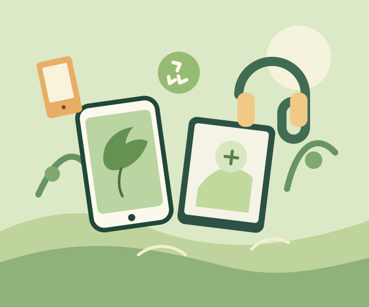

tonnes in one year
The world generated about 62 million tonnes of e-waste in 2022.
A better next life for electronics
Every phone, charger and laptop deserves a responsible next step. Learn what e-waste is and how small choices can protect the places we all share.

THE PROBLEM
We rely on electronics every day, and replace them faster than ever. When unwanted devices are dumped, burned, or taken apart without care, useful materials are lost and hazardous substances can pollute soil, water, and air.
E-waste management means collecting and handling discarded electronics safely so they can be repaired, reused, or recycled by trained workers.
Understand the impact →THE BIGGER PICTURE
Old electronics can be both a source of valuable materials and a risk when they are handled unsafely.
The world generated about 62 million tonnes of e-waste in 2022.
Only 22.3% was documented as formally collected and recycled in 2022.
Repair, reuse, and authorised recycling help keep materials in use and reduce unsafe disposal.
2022 global figures reported by the Global E-waste Monitor 2024 and World Health Organization.
MAKE THE NEXT STEP SAFER
A little preparation protects your information and helps collectors handle devices correctly.
Working electronics can often be repaired, donated, or passed to another person.
Back up important files, sign out, and erase your device before donation or recycling.
Ask what they accept and how to prepare devices, batteries, and accessories.
KEEP LEARNING
Explore global research, health guidance, international policy, and national recycling information.
A SIMPLE WAY FORWARD
Before you let a device go, take a moment to choose a safer path.
Protect your devices, repair them, and pass on working electronics.
Use an authorised e-waste collection or take-back programme.
Keep batteries and electronics out of regular household bins.